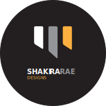

logo
The logo, Shakira Rae Designs, is inspired by name, and was created in Adobe Illustrator. I combined earth tones with basic shapes and simple text to create this modern logo.
The logo, Shakira Rae Designs, is inspired by name, and was created in Adobe Illustrator. I combined earth tones with basic shapes and simple text to create this modern logo.